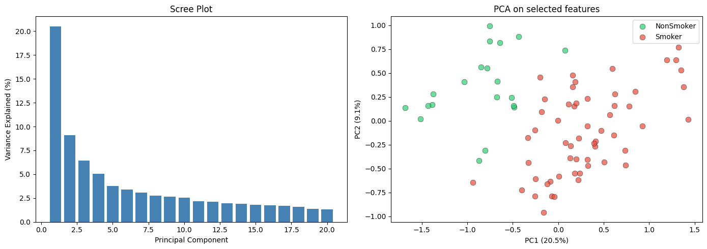
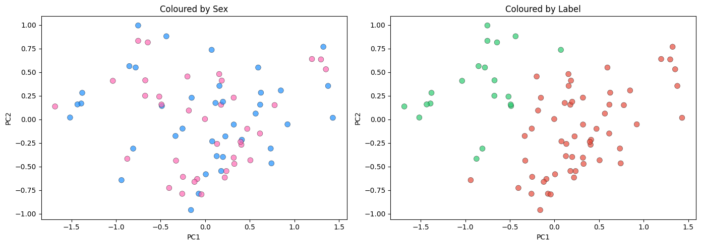
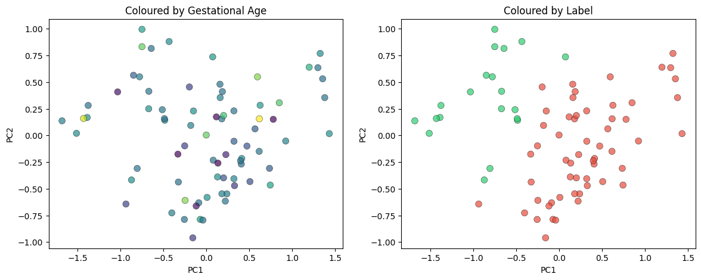
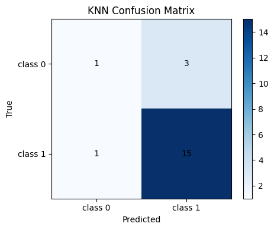
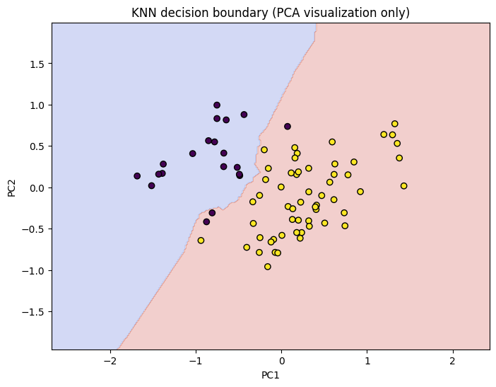
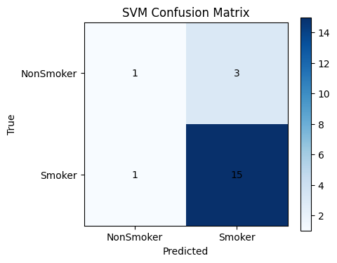
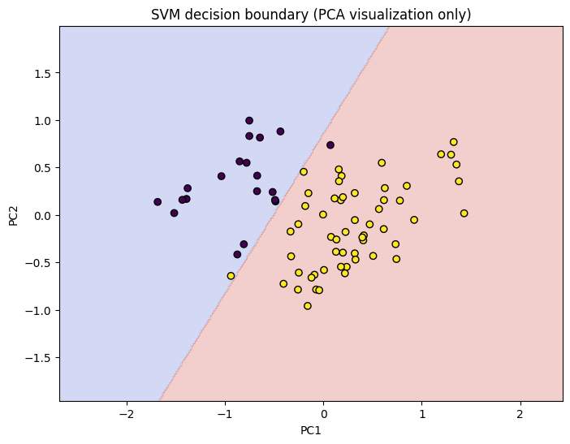
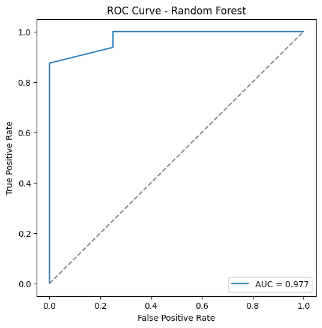
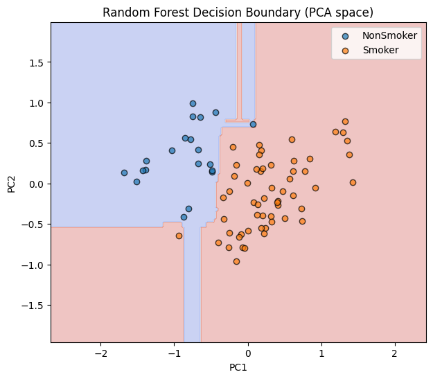
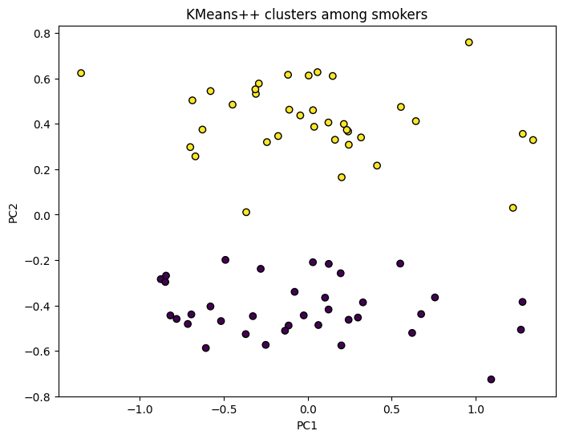

Analýza placenty fajčiarok a nefajčiarok
Autors: Patrik Broček, Rastislav Nowak
Dáta
- 72 fajčiarok
- 35 placebo vitamin C
- 37 vitamin C
- tieto dáta boli nedostupné
- 37 nefajčiarok
- 714666 záznamov TODO Maťka
- TODO Maťka - povedať o datasete
- Link na dataset
Skúmané otázky
- Dá sa z dát placenty zistiť či bola jej matka fajčiarka?
- Dajú sa nájsť hlavné TODO Maťka (gény alebo čo), ktoré sú najviac ovplyvnené fajčením?
- Dá sa učením bez učiteľa doplniť nedostupné dáta o kontrolných skupinách?
Feature selection
- Stĺpce s najmenším rozptylom : 714666 -> 20000
- Sequential feature selection s logistickou regresiou
- KBest feature selector TODO čo robil? : 20000 -> 100
Ukážka dát
TODO ukazat hodnoty tych 100 variabli
- Nejak ukazat distribucie tych variabli
PCA



Klasifikátory
Logistická regresia
KNN


SVM


Random forests


Killer features
Pre získanie TODO génov ktoré sú najviac ovplyvnené fajčením sme použili opačný postup a hľadali sme TODO gény ktoré sú najsmerodatenejšie pri predikcií či bola matka fajčiarka alebo nie.
- Random forests extraction
- Sequential feature selector
- [‘cg12268888’, ‘cg04474990’, ‘cg08913726’, ‘cg06369090’, ‘cg04004205’,‘cg13141983’, ‘cg01096688’, ‘cg11739758’, ‘cg27402634’, ‘cg24714864’]
TODO explanation
Nejaky explanator existuje sem to nejak priprdnut
Unsupervised learning
Nedostupné dáta o rozdelení fajčiarok medzi tie ktoré užívali alebo neužívali vitamín C sme skúsili nájsť pomocou učenia bez učiteľa.
- KMeans
- Algoritmus našiel rozdelenie do dvoch skupín o veľkosti 36 a 36
- Originálne kontrolné skupiny mali veľkosti 35 a 37
